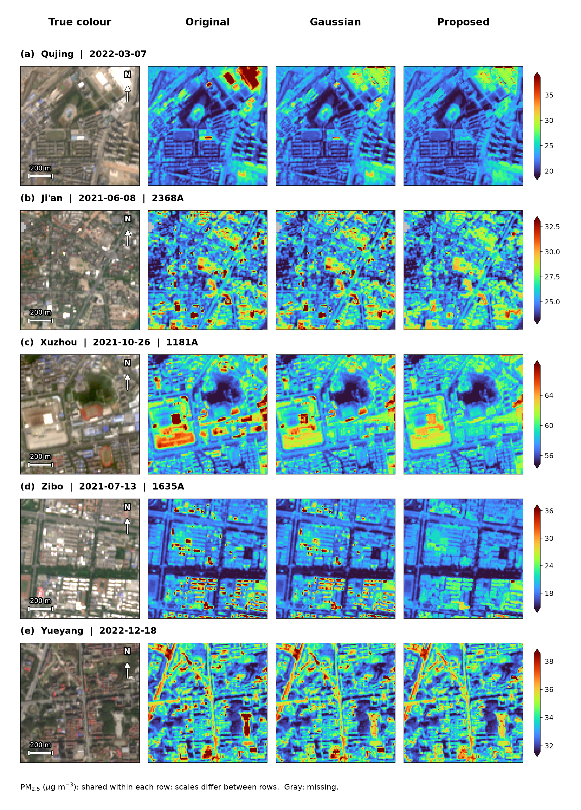

正文组合图
三幅PM图使用同场RAW色限、同一窗口与原有效像元；每场保留真彩色对照。

1. 曲靖 · 2022-03-07 (P124)
熟悉的原六格小亮对象，高斯至后续方案的变化清楚；该点改进主要已由CS完成，UNION未进一步改变这六格。
2. 吉安 · 2021-06-08 (P015)
多处分散亮屋顶进一步减弱，周围绿地与街区结构仍可辨认。
3. 徐州 · 2021-10-26 (P048)
大面积亮结构和邻近小亮点同场出现，可观察两种尺度的变化及周围道路。
4. 淄博 · 2021-07-13 (P067)
密集成组亮屋顶的高值纹理明显弱化；完整视野保留周围线状结构及局部代价。
5. 岳阳 · 2022-12-18 (P137)
冬季场景中小亮对象缓解与道路/树侧候选能同图观察；已有锁定道路核心的改变很小。
完整样本与判断范围
全部150场均保留在案例库，可检查收益、无变化和不利位置。图面选取用于展示小亮峰缓解，不能替代独立站点或道路PM真值验证。
查看全部150场与道路候选指标 →